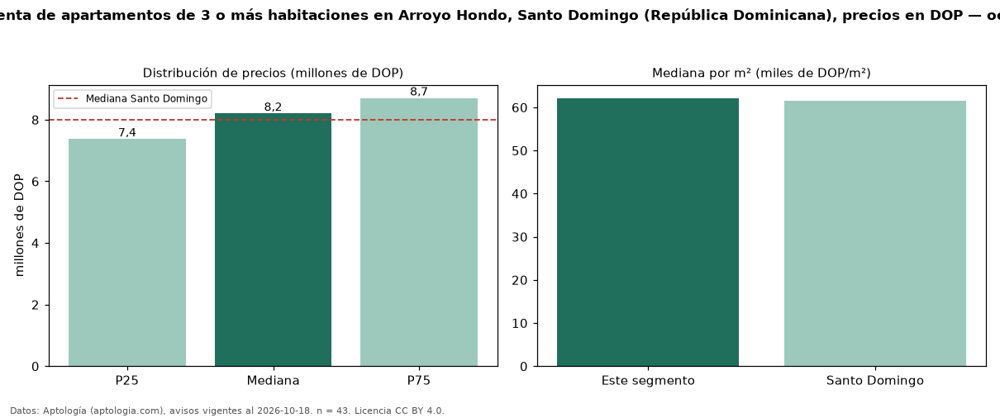

Precio de venta de apartamentos de 3 o más habitaciones en Arroyo Hondo, Santo Domingo (República Dominicana), precios en DOP — octubre 2026
En Arroyo Hondo, Santo Domingo (República Dominicana), la mediana de precio de venta de apartamentos de 3 o más habitaciones es DOP 8,20 millones, según 43 avisos vigentes. Prácticamente coincide con la mediana de Santo Domingo para apartamentos de 3 o más habitaciones (DOP 8,00 millones). Por metro cuadrado, la mediana es DOP 62.143/m² (n = 41 avisos con área), 1 % por encima de Santo Domingo (DOP 61.595/m²). Son 72 % de los 60 avisos de apartamentos en venta de la zona, cuya mediana general es DOP 8,10 millones (+1 %). El área mediana anunciada es 130 m². La mitad central de los avisos va de DOP 7,37 millones a DOP 8,70 millones (razón 1,2), una dispersión baja. Datos: Aptología (aptologia.com), CC BY 4.0 — https://www.aptologia.com/do/venta/santo-domingo/arroyo-hondo. Archivos: PDF, CSV con las cifras y gráfica PNG.

| Avisos únicos | 43 |
|---|---|
| Percentil 25 | COP 7.369.000 |
| Mediana | COP 8.200.000 |
| Percentil 75 | COP 8.700.000 |
| Mediana por m² | COP 62.142 |
Fuente: avisos vigentes de portales inmobiliarios recopilados por Aptología, deduplicados (mínimo 30 avisos únicos por celda). Precios pedidos, no cerrados. Fecha: 2026-10-18.